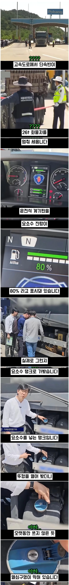

빅 딸배들 수준 ㅋㅋㅋㅋㅋㅋㅋㅋㅋㅋㅋㅋㅋㅋㅋㅋ

빅 딸배들 수준 ㅋㅋㅋㅋㅋㅋㅋㅋㅋㅋㅋㅋㅋㅋㅋㅋ
저거 개조비용도 수백 듦.
1년 이하 징역 또는 1000만원 이하 벌금이고
에뮬레이터 가격 자체는 중국산 5만원짜리도 있네
주변에 저거 달았던 차들 보면 저번 요소수 대란 때 많이 달았던 거 같음. 근데 달고보니 귀찮음 해결되고 좋은거지. 아마 그때 부르는게 값이어서 그랬나봄.
나는 유로4여서 요소수 필요 없는 차였음,,
아무튼 불법입니다
걸렸을 때의 손해랑, 안 걸릴 때 얻는 이득, 이 둘의 손득실을 따져봤을 때 이득이 크면 당연히 이득인 쪽을 고르지 않겠니
한 5-10년은 안 걸려야 한 번 걸렸을 때 손해를 커버할 정도로 손해를 크게 설정 해 두면 무서워서 시도조차 안 하지 않을까
거기에 개조해준 애들 불면 차량 압류기간 반으로 줄여주는 당근도 흔들면 어떨까
판스프링은 알아보기힘들지만
저건 뒤에서보면 매연 풀풀나와서 바로 신고갈기지않나 ㅋㅋ
요소수 안 넣고 다닌다고 매연이 육안상 크게 달라지지 않음
저걸 잡은게 매의눈인거네
그냥 저렇게 고의적인건 걸리면
차 출고하고나서 한번도 안채웠다고 치고
일반적으로 동나는 키로수 이후로는 싹 벌금으로 물려야된다고 생각함
한 5년 운행했는데
4년치 안했다고 치고 벌금 ㅈㄴ 물면 다음부턴 꼬박꼬박 넣겠ㅈ
ㄹㅇㅋㅋ
와..
요소수 앵꼬나면 시동 안걸리는걸로 알고 있는데 그것도 그냥 딸깍으로 피해버리는구나 씨부럴년들 ㅋㅋㅋㅋㅋ
이런거 걸리면 벌금 3억 이렇게 때리라니까
화나서 판스프링 발사 장전할듯
벌금이 싸서 저런돈까지 아끼는걸까